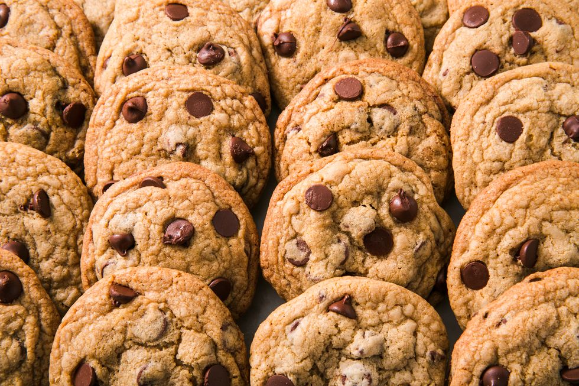

Chocolate Chip Cookies

Total Time: 25 mins
Yield: 24 cookies
Ingredients
2 3/4 cup all-purpose flour
1 tsp. baking soda
3/4 tsp. kosher salt
1 cup butter
1 cup packed dark brown sugar
1/2 cup granulated sugar
2 large eggs
2 tsp. pure vanilla extract
2 cup chocolate chips
Directions
- Preheat oven to 350° and line two large baking sheets with parchment paper. In a medium bowl, whisk together flour, baking soda, and salt.
- In another large bowl, using a hand mixer, cream together butter and sugars until mixture resembles coarse sand. Add eggs, one at a time, beating well after each. Scrape down sides of bowl, add vanilla, and beat until combined. Add dry ingredients and mix until just combined, then stir in chocolate chips.
- Using a medium cookie scoop, scoop dough 2" apart onto prepared pans. Bake until golden and edges are set, but middles are still soft, 13 to 15 minutes.